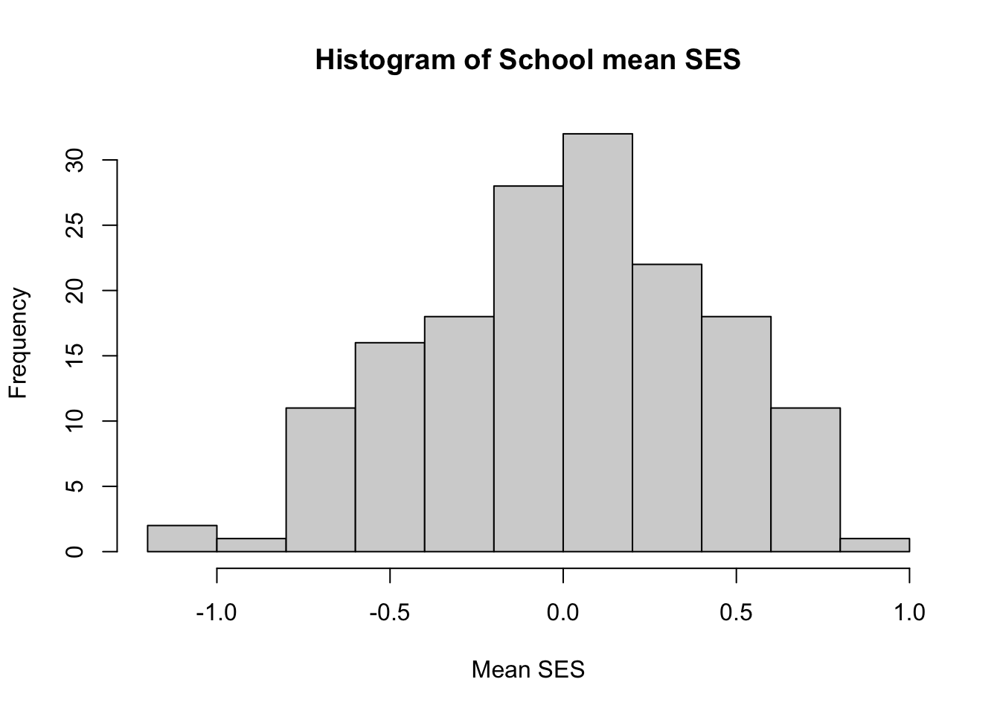

7 Mixed models as Hierarchical Linear Models
This week, we review the code introduced last week in the context of hierarchical models. We will extend last week’s examples to include predictors at the school level.
Note: we will not talk about inferences this week (p-values, confidence intervals, likelihood-ratio tests). We’ll defer our discussion to next week. You can, however, test hypotheses about fixed effects parameters using confint(model, method = "boot")
Computing p-values and doing inference in general with mixed models is difficult, and we’ll discuss it next week, but a good place for information on the issues is the GLMM FAQ
7.1 High School and Beyond Data
As we discussed last week, we’ll be using the High School and Beyond Dataset that appears in the Raudenbush and Bryk book. Our objective will be to reproduce the results they include in Chapter 4.
This week, we’ll be interested in a few predictors:
- Mean SES - this is the average of the socioeconomic status scores for students within a school, it is a school-level variable
- School Sector - this is a binary variable indicating if a school is a Catholic School (comparison group is Public)
- Group-mean centered student SES - this is the deviation of a student’s socioeconomic status score from the mean for the school (Mean SES). This is a student-level variable
More can be added, and I encourage you to try some out for yourselves.
First, let’s load the data set. I have already produced it using the code from last week, and saved it as a .rda file on github.
7.2 Model 1: unconditional model
We covered this last week, but just to illustrate with the new symbols
The grouping factor is school and the outcome is mathach so a random-effects ANOVA would be specified (using this week’s notation) as:
\[ Y_{ij} = \mu + \alpha_{j} + \epsilon_{ij} \rightarrow Y_{ij} = \gamma_{00} + u_{0j} + r_{ij} \]
where, now, \(Y_{ij}\) is the \(i^{th}\) student’s math achievement score in school \(j\) and \(\gamma_{00}\) is the grand mean math achievement across students and schools. The \(u_{j}\)’s are the school random effects and the \(r_{ij}\)’s are the student-level random errors.
We obtain \(\gamma_{00}\) from the hierarchical version:
- Student level: \(Y_{ij} = \beta_{0j} + r_{ij}\)
- School level: \(\beta_{0j} = \gamma_{00} + u_{0j}\)
Remember, with a nested, two-level design, typing (1|school) means fit a random effect (intercept) of school (allow the mean outcome to vary across schools).
In our output, we get estimates of three things:
- The variance (\(\tau_{00}\)) and standard deviation (\(\sqrt{\tau_{00}}\)) of the random effects of schools. This is in the top of the
Random effectstable labeledschool,(Intercept) - The residual variance, also known as level-1 variance, \(\sigma^{2}\)
- The estimated grand mean, or model
(Intercept), \(\gamma_{00}\)
We also see a summary of deviance residuals at level 1 (more on these in subsequent weeks).
## Linear mixed model fit by REML ['lmerMod']
## Formula: mathach ~ (1 | school)
## Data: HSB
##
## REML criterion at convergence: 47116.8
##
## Scaled residuals:
## Min 1Q Median 3Q Max
## -3.0631 -0.7539 0.0267 0.7606 2.7426
##
## Random effects:
## Groups Name Variance Std.Dev.
## school (Intercept) 8.614 2.935
## Residual 39.148 6.257
## Number of obs: 7185, groups: school, 160
##
## Fixed effects:
## Estimate Std. Error t value
## (Intercept) 12.6370 0.2444 51.717.2.1 Unconditional ICC
As mentioned last week, the unconditional model is somewhat boring, but does allow us to examine the variability of the random effects and compute the intraclass correlation. Again, our symbols change slightly:
\[ ICC = \frac{\hat{\sigma}^{2}_{\alpha}}{\hat{\sigma}^{2}_{\alpha} + \hat{\sigma}^{2}_{\epsilon}} \rightarrow \frac{\tau_{00}}{\tau_{00} + \hat{\sigma}^{2}} \]
We just read these values from the Variance column in the output and compute:
## [1] 0.1803526So the intraclass correlation is \(ICC = 0.18\) for these data. About \(18\%\) of the variation in math achievement is between the schools. That is, there is a decent amount of variability in mean math achievement across the schools. This is a nice alternative interpretation of the ICC in nested designs. We can only conclude this from the unconditional model. We’ll see next week what we can do with explained variation as we add predictors.
7.3 Means as outcomes: Binary Predictor
The second model we covered this week was the so-called Means as Outcomes Model. We’re trying to predict the group-level mean from group-level predictors. We’ll start with a binary predictor: Sector = Catholic
- Level-1: Student Level: \(y_{ij} = \beta_{0j} + r_{ij}\) same as before
- Level-2: School level: \(\beta_{0j} = \gamma_{00} + \gamma_{01}\mathrm{Catholic}+ u_{0j}\)
\[ \mathrm{Math}_{ij} = \gamma_{00} + \gamma_{01}\mathrm{Catholic}+ u_{0j}+ r_{ij} \]
- \(\gamma_{00}\): The mean math achievement of in catholic schools
- \(\gamma_{01}\): The difference between mean math achievement scores for Catholic v. Public schools
- \(\tau_{00}\): the variance of the \(u_{0j}\)’s, which is now a conditional random effect - what remains to be explained about a school’s mean math achievement beyond what sector tells us
- \(\sigma^{2}\): the variance of the person-level residuals \(r_{ij}\)
## Linear mixed model fit by REML ['lmerMod']
## Formula: mathach ~ sector + (1 | school)
## Data: HSB
##
## REML criterion at convergence: 47080.1
##
## Scaled residuals:
## Min 1Q Median 3Q Max
## -3.0130 -0.7523 0.0253 0.7602 2.7472
##
## Random effects:
## Groups Name Variance Std.Dev.
## school (Intercept) 6.677 2.584
## Residual 39.151 6.257
## Number of obs: 7185, groups: school, 160
##
## Fixed effects:
## Estimate Std. Error t value
## (Intercept) 11.3930 0.2928 38.907
## sectorCatholic 2.8049 0.4391 6.388
##
## Correlation of Fixed Effects:
## (Intr)
## sectorCthlc -0.667Note, we now see a smaller number for \(\tau_{00}\) as we’ve “explained” some of the variation between the schools: mean math achievement is estimated to be \(2.80\) points higher for a catholic schools compared with public schools. This shrinks the variance of the conditional random effects \(u_{0j}\) and we can quantify this by a quasi “variance explained” metric:
\[ \begin{aligned} \text{Var explained}_{\text{L2}}: & \frac{\tau_{unc} - \tau_{const}}{\tau_{unc}}\\ = &\frac{8.614- 6.677}{8.614}\\ = & \frac{1.937}{8.614}\\ = & 0.22 \end{aligned} \]
So knowing the sector of a school, we have a reduction in random effects variance of \(22 \%\)
7.3.1 Means as outcomes: continuous predictor
The extension to continous predictors is very straightforward. Let’s trade the Sector variable for mean.ses
- Level-1: Student Level: \(y_{ij} = \beta_{0j} + r_{ij}\) same as before
- Level-2: School level: \(\beta_{0j} = \gamma_{00} + \gamma_{01}\mathrm{mSES}+ u_{0j}\)
\[ \mathrm{Math}_{ij} = \gamma_{00} + \gamma_{01}\mathrm{mSES}+ u_{0j}+ r_{ij} \]
## Linear mixed model fit by REML ['lmerMod']
## Formula: mathach ~ mean.ses + (1 | school)
## Data: HSB
##
## REML criterion at convergence: 46961.3
##
## Scaled residuals:
## Min 1Q Median 3Q Max
## -3.13493 -0.75254 0.02413 0.76766 2.78515
##
## Random effects:
## Groups Name Variance Std.Dev.
## school (Intercept) 2.639 1.624
## Residual 39.157 6.258
## Number of obs: 7185, groups: school, 160
##
## Fixed effects:
## Estimate Std. Error t value
## (Intercept) 12.6846 0.1493 84.97
## mean.ses 5.8635 0.3615 16.22
##
## Correlation of Fixed Effects:
## (Intr)
## mean.ses 0.010We have the same information here, but now \(\gamma_{01}\) is a slope (it was before, but now it REALLY is…). So we estimate that a unit increase in a school’s mean.ses equates to a \(5.86\) increase in the mean math achievement. That seems like a big effect, and indeed, it’s t-value is large, but remember, SES is measured on a relatively small scale:

So this result really tells that there’s about a 10-point difference in math achievement between the lowest and highest mean SES schools
- going from \(-1.0 \text{ to} +1.0\) on SES we go up 2 units on SES, so \(\gamma_{01}\times 2 = 11.73\)
There is an appreciable reduction in variance of the \(u_{0j}\) here too:
\[ \frac{8.614 - 2.639}{8.614}= 0.69 \]
So we can reduce the variability of the school mean math achievement \(69\%\) if we know the mean SES of the students in the school.
7.4 Multiple hierarchical linear regression
As mentioned at the end of lecture, we’ll often have many predictors for our models. Let’s see what the output looks like when we fit a linear mixed model using both Sector and mean.ses. Now we have two predictors at level 2, so our model is:
- Level-1: Student Level: \(y_{ij} = \beta_{0j} + r_{ij}\) same as before
- Level-2: School level: \(\beta_{0j} = \gamma_{00} + \gamma_{01}\mathrm{Catholic}+ \gamma_{02}\mathrm{MeanSES}+u_{0j}\)
\[ \mathrm{Math}_{ij} = \gamma_{00} + \gamma_{01}\mathrm{Catholic}+\gamma_{02}\mathrm{MeanSES}+ u_{0j}+ r_{ij} \]
Everything retains the same meaning as before, and now we have a new regression coefficient \(\gamma_{02}\) which gives us the sector-adjusted linear relationship between mean math achievement and mean SES for the \(J = 160\) schools.
## Linear mixed model fit by REML ['lmerMod']
## Formula: mathach ~ sector + mean.ses + (1 | school)
## Data: HSB
##
## REML criterion at convergence: 46946.5
##
## Scaled residuals:
## Min 1Q Median 3Q Max
## -3.08429 -0.75039 0.02046 0.76635 2.78875
##
## Random effects:
## Groups Name Variance Std.Dev.
## school (Intercept) 2.314 1.521
## Residual 39.161 6.258
## Number of obs: 7185, groups: school, 160
##
## Fixed effects:
## Estimate Std. Error t value
## (Intercept) 12.1282 0.1992 60.887
## sectorCatholic 1.2254 0.3058 4.008
## mean.ses 5.3328 0.3686 14.467
##
## Correlation of Fixed Effects:
## (Intr) sctrCt
## sectorCthlc -0.700
## mean.ses 0.256 -0.356In our output, we see that the inclusion of mean.ses has now reduced the effect of sector. So controlling for mean.ses we have a \(\gamma_{01} = 1.23\) difference between catholic and public schools. Specifically, we might say that if we take a randomly selected catholic school and a randomly selected public school, both of which are at the same level of SES (say the overall average), we’d estimate that their mean level of math achievement scores would be about \(1.23\) points apart.
Controlling for sector did not seem to change much about the mean.ses effect. If we assume no interaction between sector and SES, this suggests that schools with higher mean SES have higher mean math scores.
7.5 Plotting predictor effects
The effects package has some nice methods for building plots of predictor effects. Essentially, this involves plotting model predictions for a levels of a predictor, holding the others constant. It requires new data, and the effects package creates these data for you.
Important to note: the plots are partial or conditional effects plots (when there is more than one predictor in the model). So they’re model based, and not purely sample correlations or mean differences.
You can try it yourself by installing it and running the following code: